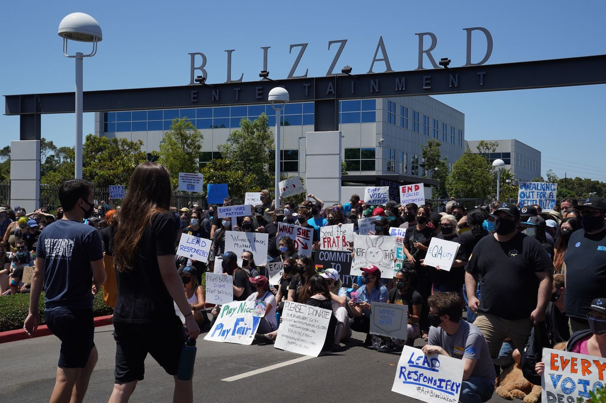
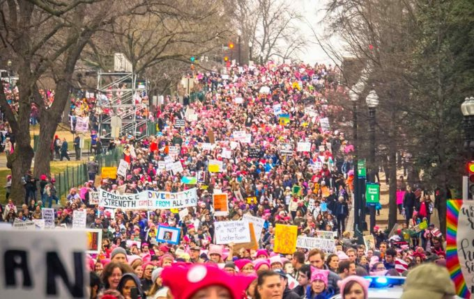

There are plenty of actions people can take to making this issue well known throughtout the world so that others may know of its severity. One such way would be to participate in activism in social media or in protests by engaging with or siding with women who have experienced such discrimination in their workplace environments. For instance, people could show their discouragement towards the "frat boy" culture of sexual harassment and discrimination towards females that was displayed in the game company Activision Blizzard on social media. This incident was able to gain lots of attention due to the many people that chose to protest against Blizzard's denial towards the brave testimonies that were brought up by their own employees.
 